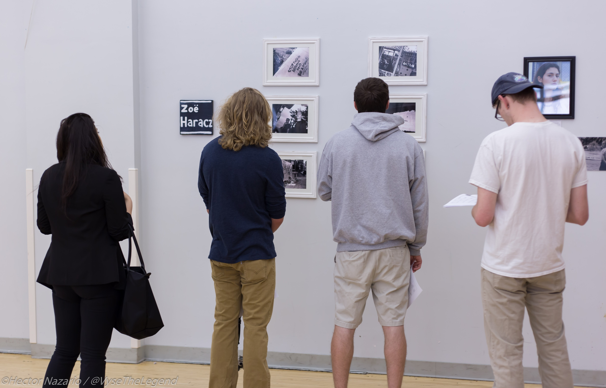

Watch the Gap is an annual art exhibition held on the Rose Hill campus of Fordham University.
The show, conceived by Shane Yelicanin, functions as a response to a number of hate crimes
which have and continue to occur on campus, while highlighting the socioeconomic divide between
the private university and surrounding Bronx community.
The inaugural show, curated by Antoinette Legnini and Yelicanin, took place on April 24 of 2016
and featured the work of both student and local artists. All proceeds have, and will continue to, benefit
the DreamYard Project, a Bronx based arts organization for children.

